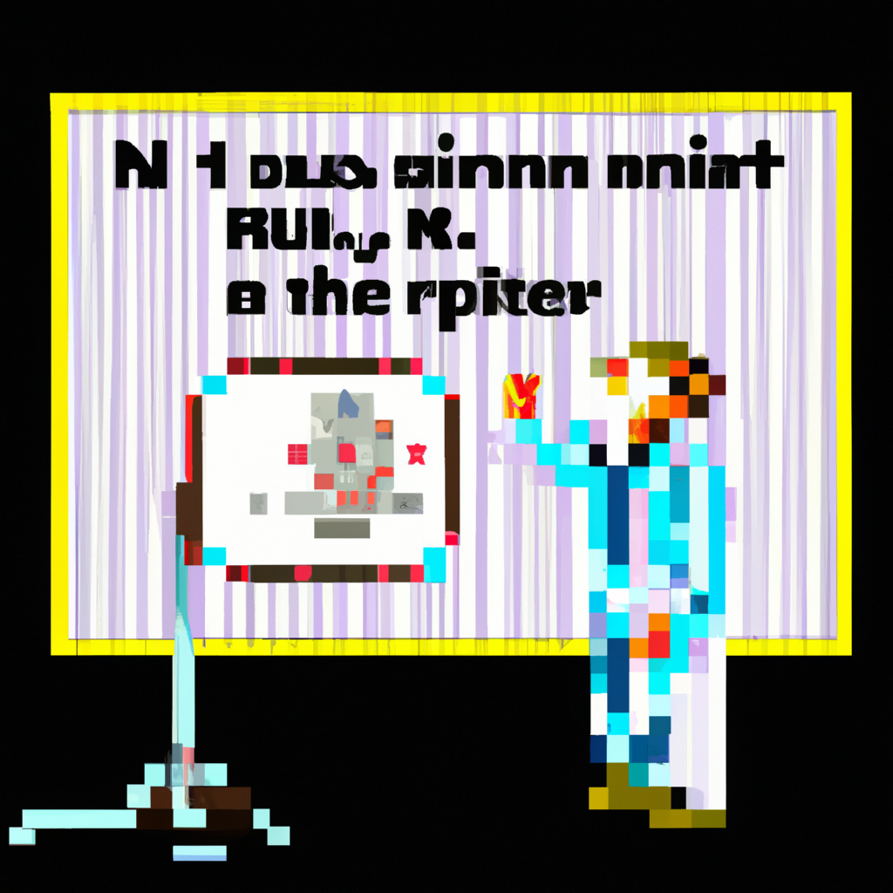

Why AI will never replace the radiologist
AI has become a popular tool for analyzing medical images, but is it really ready to replace the radiologist? In this blog post, I will look at the potential problems associated with relying on AI-driven radiology to make diagnoses.
One of the main issues with using AI in radiology is that AI algorithms are trained on large datasets. While this increases accuracy, it also means that AI algorithms may miss important details or nuances that a radiologist would pick up on. Additionally, AI algorithms may not be able to make decisions based on the patient’s medical history, which is an important factor when diagnosing a condition.
Another issue is that AI algorithms can be biased. If the training dataset contains inaccurate or biased data, then the algorithm will be trained to make the same mistakes. This is a major problem in radiology, because it can lead to incorrect or dangerous diagnoses.
Finally, AI algorithms can be slow. While they can make decisions quickly, they often need to be retrained or adjusted in order to keep up with the changing landscape of radiology. This can be time consuming and costly.
While AI has the potential to improve radiology, it is not yet ready to replace the radiologist. AI algorithms can be a useful tool, but they need to be used in conjunction with a radiologist’s expertise in order to make accurate and reliable diagnoses.